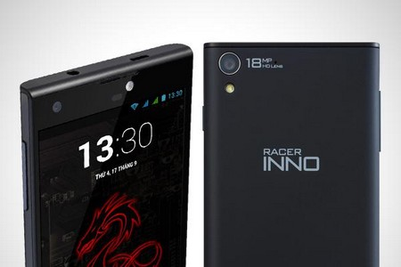

Thứ 3, 23/09/2014 | 00:00
HKPhone ra mắt Racer INNO chạy chip Qualcomm
Lần đầu tiên một thương hiệu Việt trang bị dòng chip Snapdragon 400 của Qualcomm cho sản phẩm của mình.
Sáng nay 23/9, HKPhone chính thức ra mắt mẫu điện thoại mới mang tên Racer INNO chạy chip xử lý của Qualcomm - ngôi vị số một về chip di động toàn thế giới hiện nay. Sản phẩm gắn liền với hình tượng Rồng đỏ, là bước đột phá quan trọng của hãng trong tham vọng dẫn đầu phân khúc smartphone dưới 4 triệu.
Khác biệt hoàn toàn với những mẫu máy trước đây chạy chip Mediatek, HKPhone trang bị cho sản phẩm mới vi xử lý Snapdragon, điều chưa từng có ở bất kỳ thương hiệu Việt nào.
HKPhone chính thức ra mắt Racer INNO chạy chip Qualcomm.
Phát biểu về bước tiến mới, ông Lê Hoàng Long - Giám đốc Kinh doanh HKPhone cho biết: “Sử dụng dòng chip di động số một thế giới chắc chắn sẽ nâng cao mạnh mẽ chất lượng sản phẩm HKPhone. Racer INNO ra đời cũng là lời khẳng định về tham vọng dẫn đầu và tâm huyết phát triển điện thoại thương hiệu Việt của chúng tôi”.
Racer INNO được ví như Rồng đỏ bởi sự nam tính đầy sức mạnh từ bộ vi xử lý Snapdragon 400 lõi tứ, thế hệ chip nổi bật bởi hiệu năng cao cùng khả năng tối ưu hiệu suất, đảm bảo thời lượng pin tốt. Bốn nhân Cortex A7 tốc độ 1,4 GHz trên Racer INNO tương đương vi xử lý 6 nhân của Mediatek.
Racer INNO chạy chip Snapdragon400 lõi tứ.
Đi liền bộ vi xử lý Snapdragon 400 là GPU Areano 305 được Qualcomm sản xuất riêng biệt cho dòng chip này. Với khả năng dựng đồ họa vượt trội cùng dung lượng RAM 1GB, Racer INNO chắc chắn sở hữu hiệu năng cao và chạy đa nhiệm thuyết phục hàng đầu trong phân khúc dưới 4 triệu.
Không chỉ thay đổi hoàn toàn vi xử lý, sản phẩm mới HKPhone còn được nâng cấp với pin dung lượng lên đến 2500 mAh. Kết hợp cùng khả năng câng bằng hiệu suất và ứng dụng BatteryGuru của dòng chip Snapdragon, qua thử nghiệm, máy chạy tốt trong 2 ngày chỉ trong 1 lần sạc.
Pin 2500 mAh đảm bảo sản phẩm chạy bền bỉ hàng ngày.
Racer INNO thiết kế theo phong cách tối giản, làm nổi bật vẻ mạnh mẽ bởi những đường nét cứng cáp toàn thân máy. Sản phẩm sử dụng màn hình 5 inch độ phân giải HD cùng tấm nền IPS cao cấp cho khả năng hiển thị sống động trong mọi điều kiện ánh sáng. Hình ảnh được đảm bảo chất lượng cao về màu sắc, chi tiết và độ tương phản dù xem ở bất kỳ góc độ nào.
Bên cạnh đó, HKPhone trang bị kính cường lực Dragontrail đến từ Nhật Bản cho sản phẩm này. Với độ bền gấp 6 lần thủy tinh thông thường và khả năng chịu tác động lên đến 60kg, người dùng có lẽ không phải lo lắng khi va đập hay đánh rơi.
Rồng đỏ Racer INNO trang bị kính cường lực Dragontrail từ Nhật Bản.
Về camera, Racer INNO sử dụng camera sau độ phân giải lên đến 18 megapixel, camera trước 5 megapixel hỗ trợ flash, điều chưa từng thấy ở phân khúc giá dưới 4 triệu. Có thể nói đây là mẫu máy được nâng cấp nhiều nhất từ HKPhone từ trước đến nay.
Hãng cũng nâng cấp hệ điều hành Android 4.3 cho Racer INNO thay vì 4.2.2 như các sản phẩn trươc. Điều này đồng nghĩa với việc máy sẽ chạy mượt và ổn định hơn.

Sản phẩm là mẫu máy được nâng cấp nhiều nhất từ HKPhone từ trước đến nay.
Sở hữu nhiều điểm đột phá nhưng HKPhone niêm yết mức giá chỉ 3.650.000 đồng.
Racer INNO sẽ chính thức được bán ra ngày 26/9 tới đây tại 120 showroom HKPhone trên toàn quốc. Sản phẩm đi kèm chế độ bảo hành 12 tháng và cho phép khách hàng dùng thử miễn phí trong 3 ngày.